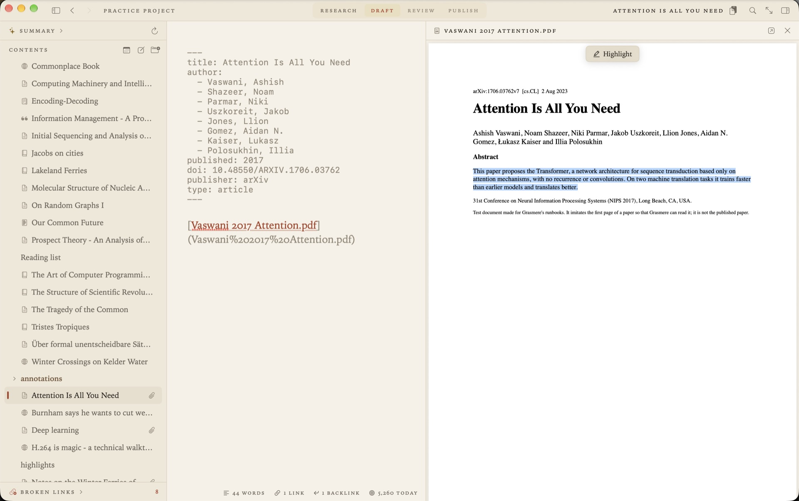

Using Zotero with Markdown
Your references live in Zotero and you’d like to write in Markdown. The two don’t know about each other, so something has to sit between them. This page covers the usual way of joining them with Pandoc, and how Grasmere does it on a Mac without plugins or a command line.

The usual way: Better BibTeX and Pandoc
Most guides describe the same set-up. Install the Better BibTeX plugin in Zotero, so each reference has a steady citation key. Export your library to a .bib file. Write your citations by key, then run Pandoc to turn them into formatted references.
Starters are alive [@field2019, p. 12].
pandoc essay.md --citeproc --bibliography library.bib --csl apa.csl -o essay.docxIt works, and it can write thousands of citation styles. It also means remembering keys, keeping a style file about, and not seeing a formatted citation until you’ve run the command. And when your supervisor returns the Word file with tracked changes, the only way back into your Markdown is by hand.
Bring your Zotero library into Grasmere
- In Zotero, choose File ▸ Export Library, or right-click a collection and choose Export Collection. Pick BibTeX, Better BibTeX or CSL JSON as the format.
- In Grasmere, choose Project ▸ Import Sources and pick the file. A sheet says how many entries it has and what will change.
- Press Import.
Each entry becomes a source in your project’s research folder. A source is an ordinary Markdown document, with the reference’s details at the top and room for your own notes beneath.
---
title: The Living Loaf
author: Field, Rosa
published: 2019
publisher: Riverbank Press
place: London
type: book
key: field2019
---A Zotero export names each entry’s attached files too. Grasmere can copy those PDFs and EPUBs into the project, so it has everything it needs, or link to them where Zotero keeps them.
Keeping the two in step
Carry on adding to Zotero as you read. Import the same file again and your sources are brought up to date, not doubled. Grasmere matches each entry by its citation key, then its DOI, then its ISBN. Only the details at the top of a source are rewritten. The notes you wrote beneath them are never changed.
With Better BibTeX, tick Keep updated when you export and Zotero rewrites the file whenever your library changes. Grasmere notices the file has changed and offers Update. If an import goes wrong, Project ▸ Undo Last Import puts everything back.
Cite as you write
Type [@, or press ⌥⌘K, and a list of your sources appears. Type part of an author’s name, a word of the title or a year, and press Return. There are no keys to remember.
Starters are alive [Field 2019, p. 12](../research/The%20Living%20Loaf.md).A citation is an ordinary Markdown link to the source. Rest the pointer on it for a preview. Rename or move the source and the link follows. And the source lists every document that cites it.
Formatted references in Word, PDF and on the web
When you export, each citation is written in the project’s style and the sources you cited are listed at the end. Grasmere writes APA 7, Harvard, Chicago author-date and MLA 9, in Word documents, PDFs and websites. The styles are set out in Citations and bibliographies in Markdown.
Your highlights and annotations
What you marked while reading can come too. Project ▸ Import Highlights reads the notes Zotero makes from a PDF’s annotations, exported as Markdown. Each highlight is quoted on its source with its page, and a note you wrote on a highlight becomes an annotation. Import again later and only what’s new is added.
If you already write with Pandoc citations
A draft written for Pandoc cites by key, as in [@field2019, p. 12] or @field2019 in a sentence. Once your sources are in the project with their keys, Project ▸ Convert Pandoc Citations rewrites every one as a citation link. A sheet shows what will change and lists any keys that name no source. The whole conversion can be undone.
What isn’t supported
- RIS and Zotero RDF. Export as BibTeX or CSL JSON instead.
- Numbered styles (Vancouver, IEEE), footnote styles (Chicago notes and bibliography, OSCOLA) and journals’ house styles.
- A live connection to Zotero. Grasmere reads the file you export, and only when you ask.
Questions
Do I need the Better BibTeX plugin?
No. Zotero’s own BibTeX and CSL JSON exports both work. Better BibTeX is worth having for its steady citation keys, and because it can keep the exported file up to date by itself.
Does Grasmere change my Zotero library?
No. It reads the exported file. Nothing in Zotero is touched.
Do I need Zotero at all?
No. Project ▸ New Source looks a paper up by its DOI or a book by its ISBN, a PDF dropped into the research folder becomes a source, and so does any web page you save. Zotero is for when your library is already there.
Will it work with Mendeley, EndNote or another reference manager?
If it can export BibTeX or CSL JSON, yes. Import Sources reads the file the same way.
Cite from your Zotero library today.
Export a .bib, import it, and type [@. The trial is free for 14 days.
Download for macOS Free for 14 days, then $14.99 once · macOS 26+Related
- Citations and bibliographies in Markdown
- Writing a thesis in Markdown
- Writing research papers in Markdown
- Import Sources, in the Citations guide
- More on writing in Markdown
Last updated .